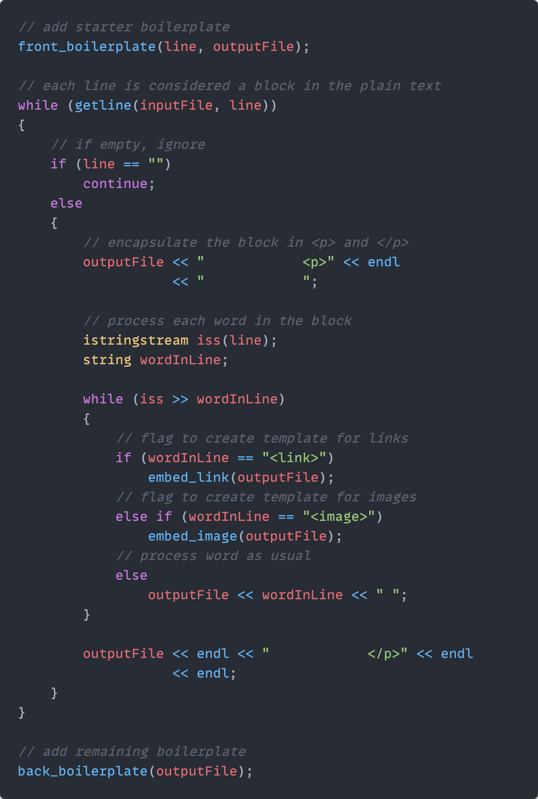

I have been manually writing/hard-coding all the content on this website in HTML files: the images, gifs, tables, even the notes that you're reading right now. And that means having to conform to the HTML syntax whenever I want to add a new piece of content.
That's fine for single images or short paragraphs, but for longer-form writing it's kind of a pain to have to enclose every paragraph in <p> and </p> and format everything correctly. Plus, writing directly in the HTML file itself, cluttered with the boilerplate, is not great.
I found out that there are websites that take Markdown or plain text files and convert them into HTML code. But I thought that such a functionality should be so simple that I could program it with what little coding experience I have.
So this is what I created ➞ TextToHTML
It is a super simple program that processes a plain .txt file into HTML code that can be copied and pasted into any existing HTML file. It should make the process of writing notes on my website slightly easier. Though it doesn't have any features other than parsing plain text. (I'll still have to create tables and embed links manually, unless I figure out a nifty trick to make my program handle those as well. I have some ideas, and hopefully I can get to work on them soon-ish. Maybe after finals.)
P.S. I wrote this note in a plain text file and converted it to a HTML snippet using my program. Is this what it feels like to make your own tools for carving a sculpture, or hand-making your own noodles for a dish?
| v0.12 | Program now appends table item template to the HTML snippet (to be copy-pased into the notes page). |
| v0.11 | Added functionality to embed a link or image template in the HTML snippet using a <link> or <image> flag. |
| v0.10 | The program now also encapsulates the HTML snippet in the boilerplate specific to my website. One less thing to copy-paste. |